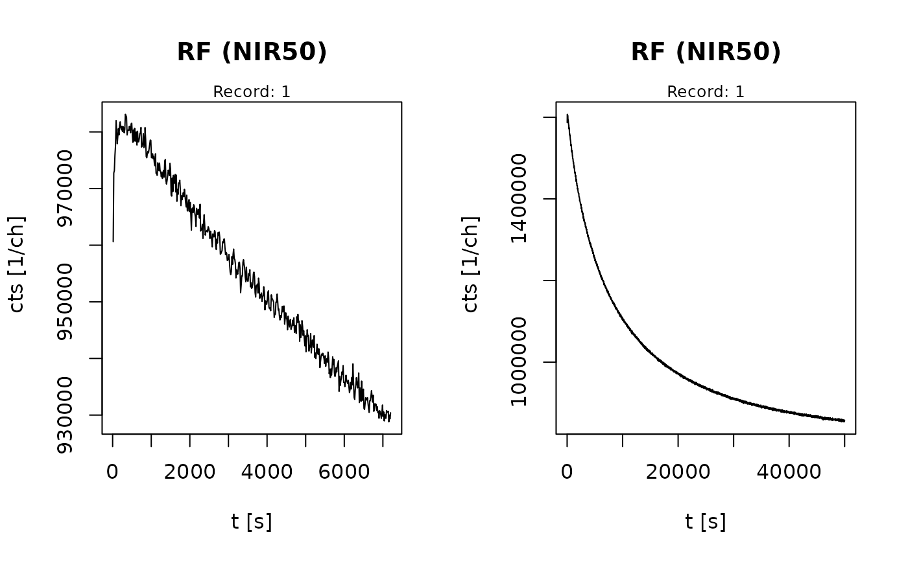

RF70 Example data as RLum.Analysis objects
Source:R/Luminescence-package.R
ExampleData.RF70Curves.RdCollection two curves from Kreutzer et al. (2018) measured using the RF70 protocol (Frouin et al., 2017) as RLum.Analysis objects.
Format
BDX16648: RLum.Analysis with two IR-RF curves as RLum.Data.Curve objects
Source
RF70Curves
| Lab: | IRAMAT-CRP2A, CNRS-Université Bordeaux Montaigne, Bordeaux, France |
| Lab-Code: | BDX16648 |
| Location: | Médoc, France (details see reference) |
| Material: | K-feldspar (100-200 \(\mu\)m) |
| Reference: | Kreutzer et al. (2018) |
References
Frouin, M., Huot, S., Kreutzer, S., Lahaye, C., Lamothe, M., Philippe, A., Mercier, N., 2017. An improved radiofluorescence single-aliquot regenerative dose protocol for K-feldspars. Quaternary Geochronology 38, 13–24. doi:10.1016/j.quageo.2016.11.004
Kreutzer, S., Duval, M., Bartz, M., Bertran, P., Bosq, M., Eynaud, F., Verdin, F., Mercier, N., 2018. Deciphering long-term coastal dynamics using IR-RF and ESR dating: A case study from Médoc, south-West France. Quaternary Geochronology 48, 108–120. doi:10.1016/j.quageo.2018.09.005
Examples
##load data
data(ExampleData.RF70Curves, envir = environment())
##plot data
plot_RLum(RF70Curves)
